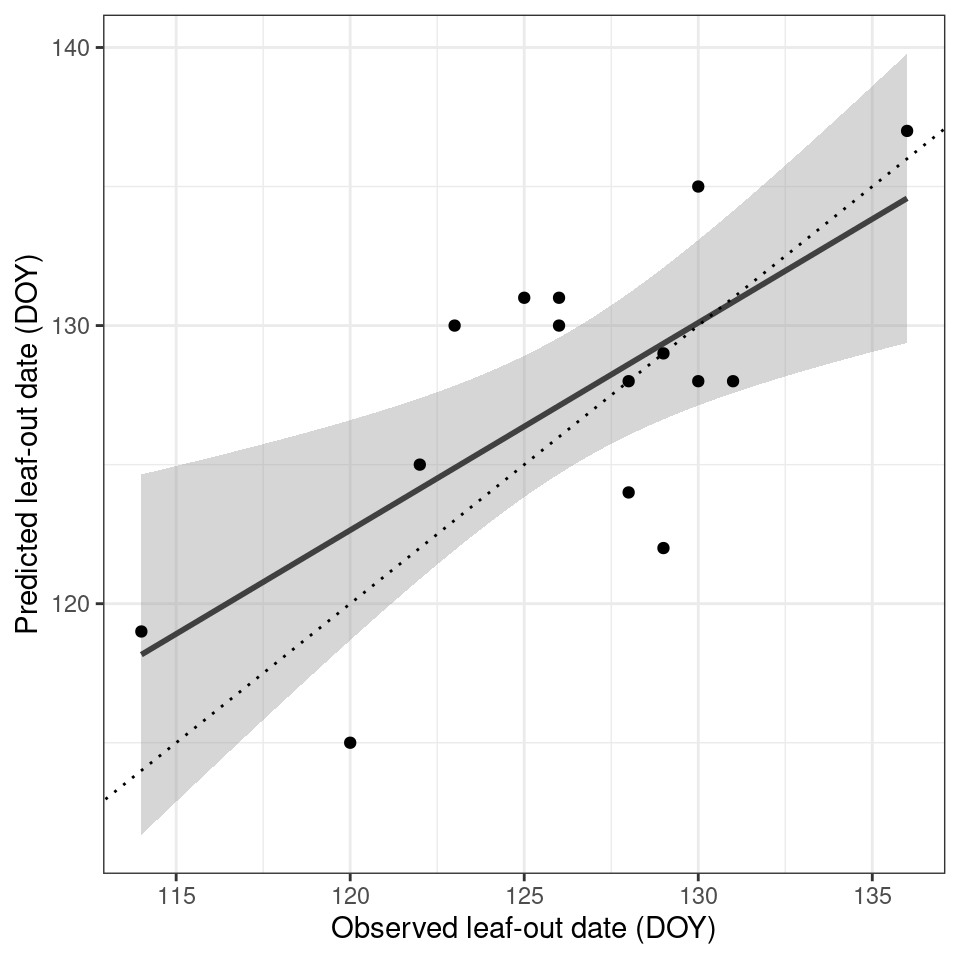

# I will use the phenocamr package which
# interfaces with the phenocam network API
# to download time series of vegetation
# greenness and derived phenology metrics
library(phenocamr)
# download greenness time series,
# calculate phenology (phenophases),
# amend with DAYMET data
phenocamr::download_phenocam(
site = "harvard$",
veg_type = "DB",
roi_id = "1000",
daymet = TRUE,
phenophase = TRUE,
trim = 2022,
out_dir = tempdir()
)
harvard_phenocam_data <- readr::read_csv(
file.path(tempdir(), "harvard_DB_1000_3day.csv"),
comment = "#"
)
# reading in harvard phenology only retaining
# spring (rising) phenology for the GCC 90th
# percentile time series (the default)
harvard_phenology <- readr::read_csv(
file.path(
tempdir(),
"harvard_DB_1000_3day_transition_dates.csv"
),
comment = "#"
) |>
filter(
direction == "rising",
gcc_value == "gcc_90"
)6 Phenology modelling
6.1 Introduction
In the previous chapters (Chapter 4, Chapter 5) you have seen how the development of vegetation throughout the season, or phenology, is determined by temperature, and therefore through the lapse rate to topography. Although these chapters give you an intuition on how phenology might change under global heating, it does not provide a (pseudo) mechanistic model for predicting phenology.
Luckily the science around phenology is old. People been observing vegetation phenology for hundreds of years with observations of cherry blossoms in Kyoto going back to the 9th century (Aono and Kazui 2008). Furthermore, there is a good understanding of how phenology is triggered in spring and how this can be captured using (mechanistic) models. The most basic principle uses the concept of growing degree days (GDD) and first mentions go back to the 18th century as described by De Reaumur (1735).
This growing degree day concept stipulates that spring phenology depends on the accumulation over time of growing days, i.e. days which exceed a certain threshold temperature. If a set number of growing degree days are reached it will trigger spring phenology.
Note
This is a very dense chapter, covering both the concepts of constructing a (pseudo) mechanistic model and the basics of model parameterization. Take your time to read through the chapter multiple times to get a good grasp of the material presented.
6.2 PhenoCam validation data
To illustrate the use of growing degree days in modelling spring phenology I will use PhenoCam data. The PhenoCam network (Andrew D. Richardson 2018; Andrew D. Richardson et al. 2018) uses network connected cameras to collect seasonal trajectories of vegetation greenness, as characterized with green chromatic coordinate (GCC) values. PhenoCam data can be downloaded using the phenocamr R package (Hufkens et al. 2018).
The phenocamr R package uses the PhenoCam API to access the latest GCC time series and derive phenology using a threshold based methodology similar to that described in Chapter 5. The data in Figure 6.1 should therefore be familiar. The phenocamr API call also downloads DAYMET data, which includes both daily minimum and maximum data. This ancillary data will be used in this basic modelling example below.
Code
ggplot(harvard_phenocam_data) +
geom_line(
aes(
as.Date(date),
smooth_gcc_90
),
colour = "grey25"
) +
geom_point(
data = harvard_phenology,
aes(
as.Date(transition_25),
threshold_25
)
) +
labs(
x = "",
y = "GCC"
) +
theme_bw() +
theme(
legend.position = "none"
)
Growing degree days are at it’s most basic specified as the cumulative sum of the days above a certain (preset) temperature. Here a growing degree day x for a temperature threshold (t) is defined as:
\(x = \left\{ \begin{array}{cl} 1 & : \ x \geq t \\ 0 & : \ x < t \end{array} \right.\)
\(GDD_k=\sum_{i=1}^k x_i\).
Where k is the number of growing degree days for a daily time step i. In R this equation is simplified to cumsum(temperature >= 5) with temperature a vector of temperature values and threshold of 5 \(^\circ\)C. Using this knowledge we can quickly calculate and plot all days which adhere to this criteria and their cumulative sum Figure 6.2.
# return mean daily temperature as well
# as formal dates (for plotting)
harvard_temp <- harvard_phenocam_data |>
group_by(year) |>
dplyr::mutate(
date = as.Date(date),
tmean = (tmax..deg.c. + tmin..deg.c.)/2,
gdd = cumsum(tmean >= 5)
) |>
dplyr::select(
date,
year,
tmean,
gdd
) |>
ungroup()
# convert the harvard phenology data and only
# retain required data
harvard_phenology <- harvard_phenology |>
mutate(
doy = as.numeric(format(as.Date(transition_25),"%j")),
year = as.numeric(format(as.Date(transition_25),"%Y"))
) |>
select(
year,
doy,
transition_25,
threshold_25
)Code
# grab only the 2010 value of spring phenology
harvard_phenology_2010 <- harvard_phenology |>
filter(
year == 2010
)
harvard_gdd_value <- harvard_temp |>
filter(
date == harvard_phenology_2010$transition_25
)
p <- ggplot(harvard_temp) +
geom_line(
aes(
date,
tmean
)
) +
geom_point(
aes(
date,
tmean,
colour = tmean > 5,
group = 1
)
) +
geom_vline(
data = harvard_phenology_2010,
aes(
xintercept = as.Date(transition_25)
)
) +
scale_colour_discrete(
type = c(
"blue",
"red"
)
) +
labs(
x = "",
y = "temperature"
) +
xlim(
c(
as.Date("2010-01-01"),
as.Date("2010-06-30")
)
) +
theme_bw() +
theme(
legend.position = "none"
)
p2 <- ggplot(harvard_temp) +
geom_line(
aes(
date,
gdd
)
) +
geom_point(
aes(
date,
gdd,
colour = tmean > 5,
group = 1
)
) +
scale_colour_discrete(
type = c(
"blue",
"red"
)
) +
geom_vline(
data = harvard_phenology_2010,
aes(
xintercept = as.Date(transition_25)
)
) +
geom_hline(
data = harvard_gdd_value,
aes(
yintercept = gdd
),
lty = 2
) +
labs(
x = "",
y = "GDD (#)"
) +
xlim(
c(
as.Date("2010-01-01"),
as.Date("2010-06-30")
)
) +
ylim(c(0, 120)) +
theme_bw() +
theme(
legend.position = "none"
)
# compositing
p + p2 +
plot_layout(ncol = 1) +
plot_annotation(
tag_levels = "a",
tag_prefix = "(",
tag_suffix = ")"
)
In Figure 6.2 you can see how growing degree days (in red) accumulate when the season progresses. Spring leaf development in 2010 happens on day-of-year (DOY) 114, where for this scenario (with a temperature threshold of 5\(^\circ\)C) happens after the accumulation of approximately 30 growing degree days. For this particular year one can say, that given a temperature threshold of 5\(^\circ\)C to calculate growing degree days spring will happen after 30 such days. However, due to interannual variability it is not guaranteed that this model which, relies on both a temperature threshold and a number accumulated days (often referred to as F* in literature), will work for every given year. There is a need to generalize our model, and pick the right parameters (temperature threshold, number of accumulated days) to predict phenology. Generalizing this concept is our next step to formulate a true phenology model.
6.3 Growing degree day model optimization
The simple statement for a single year as characterized by the behaviour of a simple cumulative sum cumsum(temperature >= 5) can be rewritten as:
gdd_model <- function(data, par) {
# split out parameters from a simple
# vector of parameter values
threshold <- par[1]
accumulated_days <- par[2]
# accumulate growing degree days for
# temperature data
gdd <- cumsum(data >= threshold)
# figure out when the number of growing
# degree days exceeds the minimum value
# required for leaf development, only
# return the first value
doy <- unlist(which(gdd >= accumulated_days)[1])
return(doy)
}This model (function) requires a temperature data, and vector of parameter values. Running the model on the original 2010 data with the previously observed values and parameters 5 and 30, for the temperature threshold and accumulated days respectively, should yield an estimated spring phenology at DOY 114.
# confirm that the model function
# returns expected results (i.e. DOY 114)
# (we filter out the year 2010, but
# removing the filter would run the
# model for all years!)
prediction <- harvard_temp |>
filter(
year == 2010
) |>
group_by(year) |>
summarize(
pred = gdd_model(
data = tmean,
par = c(5, 30)
)
)
print(prediction)# A tibble: 1 × 2
year pred
<dbl> <int>
1 2010 114This model can now be used to generalize phenology dynamics across years for a given site, and/or across multiple sites using a model optimization/parameterizations.
6.3.1 Phenology model optimization
When we want to estimate a general set of parameters for our growing degree day model we need to optimize them across a wide range of observations (sites and or years). In particular, we want to miinimize the error (a cost function) between the model results (for a given set of parameters, i.e. the temperature threshold and accumulated days when phenolog happens) and our observed data. If you’ve taking any introduction to statistical or machine learning this problem will sound fairly familiar. For example, in a linear model one optimizes two parameters an intercept and a slope to minimize the difference between observed and modelled (linear) model results. In our example, we do not have a linear model but a more complex one with two parameters - however the same concept applies.
Estimating these parameters efficiently can be done using various parameter optimization methods. Examples of such methods include simulated annealing (GenSA R package), bayesian optimization methods (BayesianTools R package). For simplicity I will use the GenSA R package which relies on simulated annealing method to illustrate the estimation of model parameters.
In this example the optimization minimizes a cost function which in this example is defined as the root mean squared error (RMSE) between the observed and the predicted values.
# run model and compare to true values
# returns the RMSE
rmse_gdd <- function(par, data) {
# split out data
drivers <- data$drivers
validation <- data$validation
# calculate phenology predictions
# and put in a data frame
predictions <- drivers |>
group_by(year) |>
summarise(
predictions = gdd_model(
data = tmean,
par = par
)
)
predictions <- left_join(predictions, validation)
rmse <- predictions |>
summarise(
sqrt(mean((predictions - doy)^2, na.rm = TRUE))
) |>
unlist()
# return rmse value
return(rmse)
}
Warning
Both the cost function as the growing degree day function are not optimized for speed. Both functions are written with clarity in mind to teach the basic concepts of model optimization/parameterization. Model optimization relies on iteratively searching for the best parameter by running the model thousands of times. Slow code can make it impossible to converge on a solution as time requirements grow beyond what is workable.
Within the context of this worked example speed is not a concern. However, when implementing your own code, take care to optimize both functions for speed by vectorization and other techniques.
In the final optimization will iteratively step through the parameter space, running the cost function (which in terms calls the main model), and find an optimal solution to the problem (i.e. minimize the RMSE). Often starting model parameters and limits to the parameter space are required. Defining the limits of your parameter space well can significantly reduce the time needed to converge upon a solution, and is often bound by the physical constraints of the model (i.e. it is unlikely that spring will happen after the accumulation of 180 growing degree days). Similarly, temperature thresholds fall within a -10 to 45 \(^\circ\)C range, the physical limits of plant growth.
# starting model parameters
par = c(0, 30)
# limits to the parameter space
lower <- c(-10,0)
upper <- c(45,180)
# data needs to be provided in a consistent
# single data file, a nested data structure
# will therefore accept non standard data formats
data <- list(
drivers = harvard_temp,
validation = harvard_phenology
)
# optimize the model parameters
optim_par = GenSA::GenSA(
par = par,
fn = rmse_gdd,
lower = lower,
upper = upper,
control = list(
max.call = 4000
),
data = data
)$parAfter an optimization routine (calling the cost function 4000 times) the optimal parameters were determined to be 7.993938, 18.185416 for the temperature threshold and number of accumulation days respectively. We can now plug these values back into our model and run it across all available years. When looking at this small dataset for Harvard forest we see a reasonable agreement between observed and predicted values (Figure 6.3). Obviously, including more sites and years would increase the model performance.
# run the model for all years
# to get the phenology predictions
predictions <- harvard_temp |>
group_by(year) |>
summarize(
prediction = gdd_model(
data = tmean,
par = optim_par
)
)Code
# join predicted with observed data
validation <- left_join(predictions, harvard_phenology)
ggplot(validation) +
geom_smooth(
aes(
doy,
prediction
),
colour = "grey25",
method = "lm"
) +
geom_point(
aes(
doy,
prediction
)
) +
labs(
x = "Observed leaf phenology (DOY)",
y = "Predicted leaf phenology (DOY)"
) +
theme_bw() +
theme(
legend.position = "none"
)
More advanced models exist, which include not only temperature but also radiation, precipitation and or temporal lags or other requirements such as frost during the preceding winter depending on the vegetation type or assumptions made. For an overview of these more advanced models I refer to Basler (2016) and Hufkens et al. (2018).
6.4 Spatial scaling
With a basic model parameterized you can explore if and how the relationship between observed and predicted values scale across a larger landscape. I will use DAYMET tiled data to scale the results spatially (relying on the same driver data as used during parameterization). First I download both minimum and maximum temperature data and average them to a mean daily value (as previously used), using the daymetr R package (Hufkens et al. 2018).
# Download daily data
daymetr::download_daymet_tiles(
tiles = 11935,
start = 2012,
end = 2012,
param = c("tmin","tmax"),
path = "data-raw/",
silent = TRUE
)
# calculate the daily mean values
r <- daymetr::daymet_grid_tmean(
path = "data-raw",
product = 11935,
year = 2012,
internal = TRUE
)For convenience I reproject the data to geographic coordinates, and limit the data to the first 180 days (layers) of the dataset to reduce the memory footprint of the calculations.
# reproject to lat lon
r <- terra::project(
r,
"+init=epsg:4326"
)
# subset to first 180 days
ma_nh_temp <- terra::subset(
r,
1:180
)One can then apply the model to this raster (cube) using the the terra::app() function and an appropriately formulated function, i.e. our growing degree day model gdd_model(). I refer to the terra::app() for the specifics on how to ensure your functions are compatible with raster processing, but the general rule is that the data argument comes first in the function applied (with all other parameters forwarded by name).
predicted_phenology <- terra::app(
ma_nh_temp,
fun = gdd_model,
par = optim_par
)Plotting these results show a diverse response across the landscape, with higher elevation locations in the north west of the scene having a later leaf out date (in DOY) then coastal or urban areas (i.e. the greater Boston areas south east in the scene). This is both a reflection of the lapse rate as discussed in Chapter 4 and the urban heat island effect (Zhang, Friedl, and Schaaf 2004).
Code
library(leaflet)
# set te colour scale manually
pal <- colorNumeric(
"magma",
values(predicted_phenology),
na.color = "transparent"
)
# build the leaflet map
# using ESRI tile servers
# and the loaded demo raster
leaflet() |>
addProviderTiles(providers$Esri.WorldImagery, group = "World Imagery") |>
addProviderTiles(providers$Esri.WorldTopoMap, group = "World Topo") |>
addRasterImage(
predicted_phenology,
colors = pal,
opacity = 0.8,
group = "Phenology model results"
) |>
addLayersControl(
baseGroups = c("World Imagery","World Topo"),
position = "topleft",
options = layersControlOptions(collapsed = FALSE),
overlayGroups = c("Phenology model results")
) |>
addLegend(
pal = pal,
values = values(predicted_phenology),
title = "DOY")